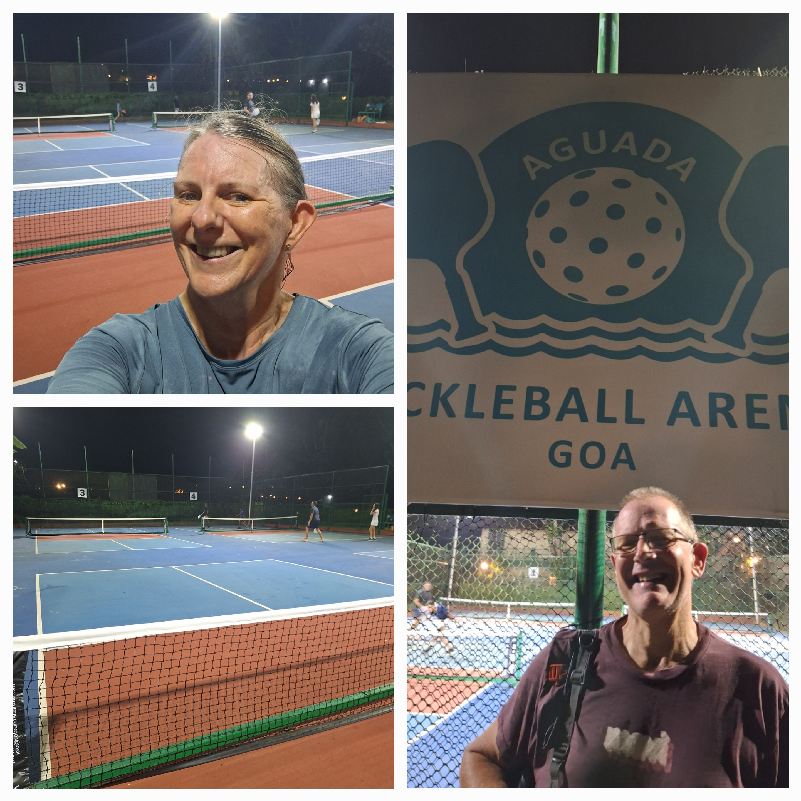

Goa's pickleball scene is young but growing fast, with the sport getting a serious push from local hotel groups and the Goa Pickleball Association. We played at the Aguada Pickleball Arena, right on Sinquerim Beach opposite the Taj Fort Aguada Resort, to see what a night session there actually looks like.

The Aguada Pickleball Arena sits opposite the Taj Fort Aguada Resort & Spa on Sinquerim Beach, backed by IHCL Goa as part of a push to make the state a sports-tourism destination. Courts are outdoor, floodlit, and laid out in the blue-and-terracotta colour scheme now common at purpose-built facilities in India.
We played in the evening under lights, alongside a mix of other players working through open sessions on the neighbouring courts. It's a genuinely pleasant setting — Fort Aguada in the background, sea air, decent lighting for night play — but the standard of competition we found was more recreational than competitive.
Our take: worth a stop if you're staying near Sinquerim or Candolim and want to fit in a session by the coast, but don't expect a deep pool of strong players yet.
| Court quality | ★★★★☆ |
| Quality of games | ★★★☆☆ |
| Ease of joining | ★★★☆☆ |
| Competitive level | ★★☆☆☆ |
| Value | ★★★★☆ |
| Wanderers rating | 6/10 |
Would we go back? Yes, for the setting and the novelty of coastal night play, but with tempered expectations on competitive level. As the Goa Pickleball Association keeps growing the sport in the state, this venue is well placed to improve as the player pool deepens.
BPS Sports Club built the first dedicated pickleball courts in Goa and has since become the sport's competitive home base on the island. It hosts the annual BPS Open, run with the Goa Pickleball Association — the 2026 edition carried a ₹5 lakh prize pool, the largest in the state. Worth a look if you want the most serious games Goa currently has to offer.
A North Goa club pairing pickleball with padel in Assagao, popular with the Anjuna/Assagao crowd. Two professional-grade courts, bookable by the session — a convenient option if you're staying up north rather than around Sinquerim or Candolim.
A 5-star resort in South Goa that added four professional beachfront courts and now runs the Sunset Pickleball Fiesta, a growing tournament drawing 200+ players from across India. More resort-luxury experience than open community play, but a striking setting if you're staying south.
Daytime heat and humidity make Goa a night-play destination for pickleball — the courts are floodlit for exactly this reason.
The scene is still developing, so don't expect the depth of players you'd find at an established US or European club.
As with most newer venues, equipment on-site may be limited — travel with your own gear to be safe.
Goa is an easy, scenic stop for a travelling player rather than a competitive destination — yet. The Aguada Pickleball Arena gets the setting right, and with a hotel group and a national association actively investing in the sport here, it's one to watch as the local scene matures.